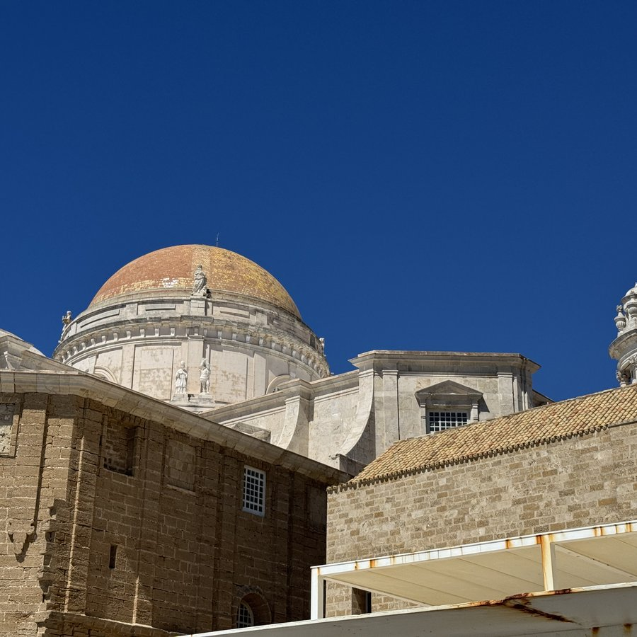
Es war so schön geplant. Wir hatten ja noch einen zweiten Tag in den roten Bussen gut, den wollten wir nutzen, um ein paar Punkte in der Altstadt anzufahren — und um dann vielleicht doch noch vor 16 Uhr am Stadion zu sein und Karten für das heutige Spiel Cádiz CF gegen UD Las Palmas zu ergattern. Las Palmas, das ist unser anderes Spanien-Ziel auf Gran Canaria.
Aber erstens kommt es anders und zweitens als man denkt. Der Reihe nach.
Um möglichst früh zu starten, sind wir um zwanzig nach zehn aus dem Zimmer — die roten Busse nehmen den Betrieb um 10 Uhr auf. Was wir nicht bedacht hatten: Sie starten am Hafen an Haltestelle 1. Der Bus braucht also mindestens bummelige 45 Minuten, bis er bei uns am Hotel an Haltestelle 13 eintrifft. Wir standen uns die Beine bis fast 11 Uhr in den Bauch.
Dafür war er erfreulich leer. Am Hafen sahen wir dann auch, warum: kein einziger Kreuzfahrer im Hafen.
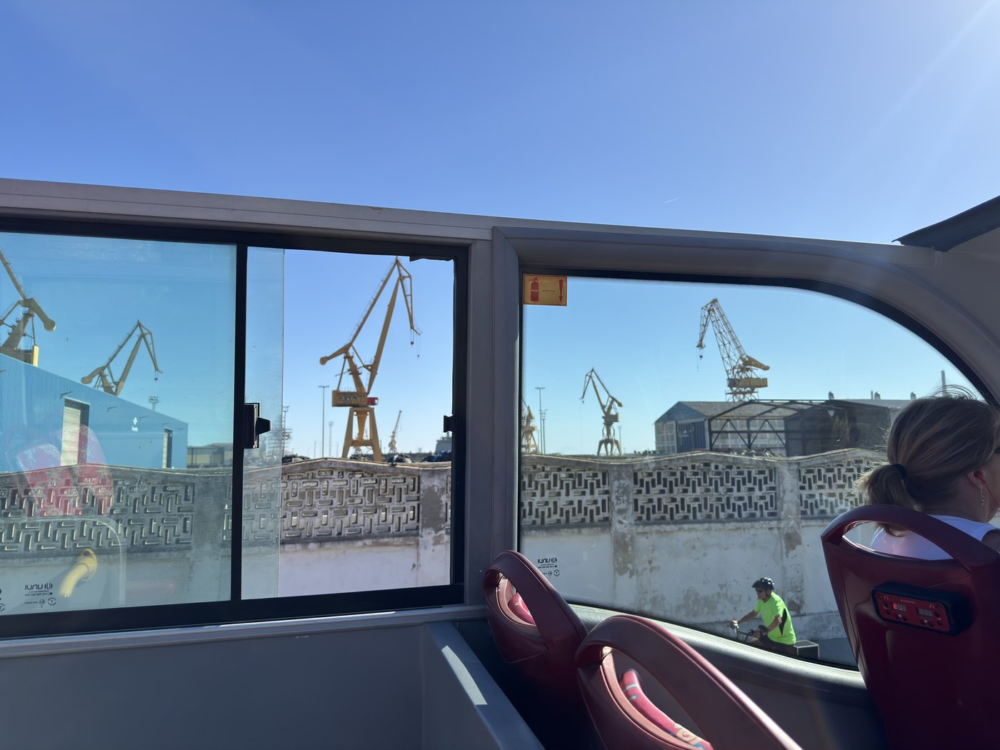
Die Tour ging dafür auch an die Haltestellen 14 und 15 im Hafengebiet, die beim letzten Mal nicht angefahren worden waren. Dort sieht man den Bahnhof mal von der Rückseite.
Mein eigentlicher Plan war gewesen, erst noch einmal die Runde um die Altstadt zu fahren und dann an der Kathedrale auszusteigen. Spontan entschieden wir uns dann doch dafür, schon beim ersten Halt auf dem Hinweg auszusteigen — was sich später als sehr notwendig erwies, auch wenn das zu dem Zeitpunkt noch gar nicht absehbar war. Aber ich greife vor.
Kurz überlegt, die Kathedrale zu besichtigen. Nachdem das Eintritt kostet, haben wir uns dagegen entschieden — vielleicht mal als gezielter Ausflug, aber für das, was wir vorhatten, nicht geeignet. Also nur ein paar Fotos auf dem Vorplatz, und dann hinein in die schmucken engen Gäßchen der Altstadt.
Dabei begegneten wir einem neugierigen kleinen Zamperl, dem es unter anderem Sassis Knöchel sehr angetan hatten. Er unterzog sie jedenfalls einer ausführlichen olfaktorischen Untersuchung.
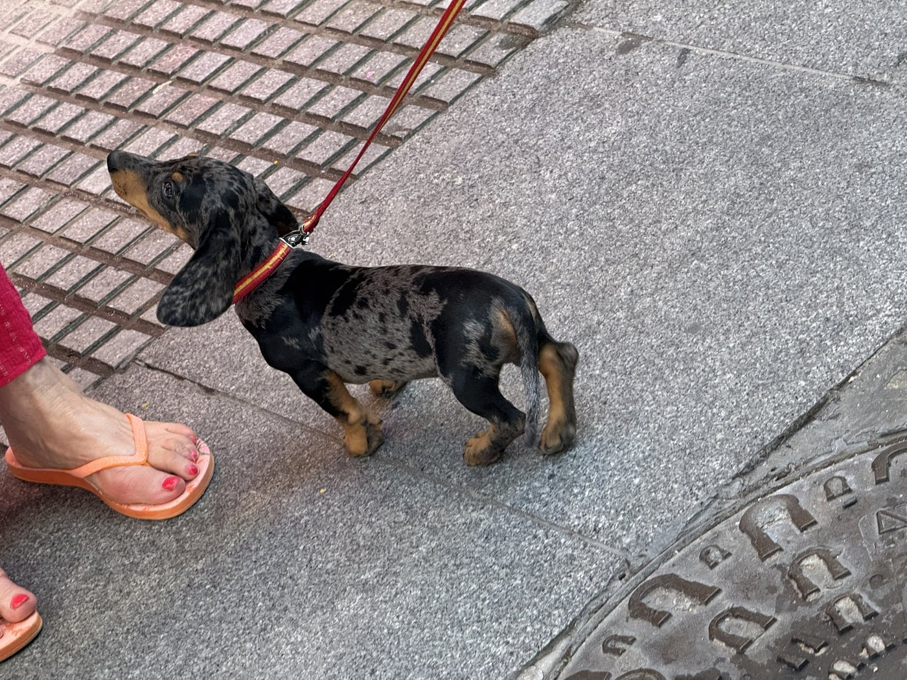
Unser Ziel war der Mercado Central de Abastos, die Markthalle von Cádiz — mit vielen, vielen dauerhaften Marktständen ringsherum, an denen es vornehmlich frische Lebensmittel zu kaufen gibt.
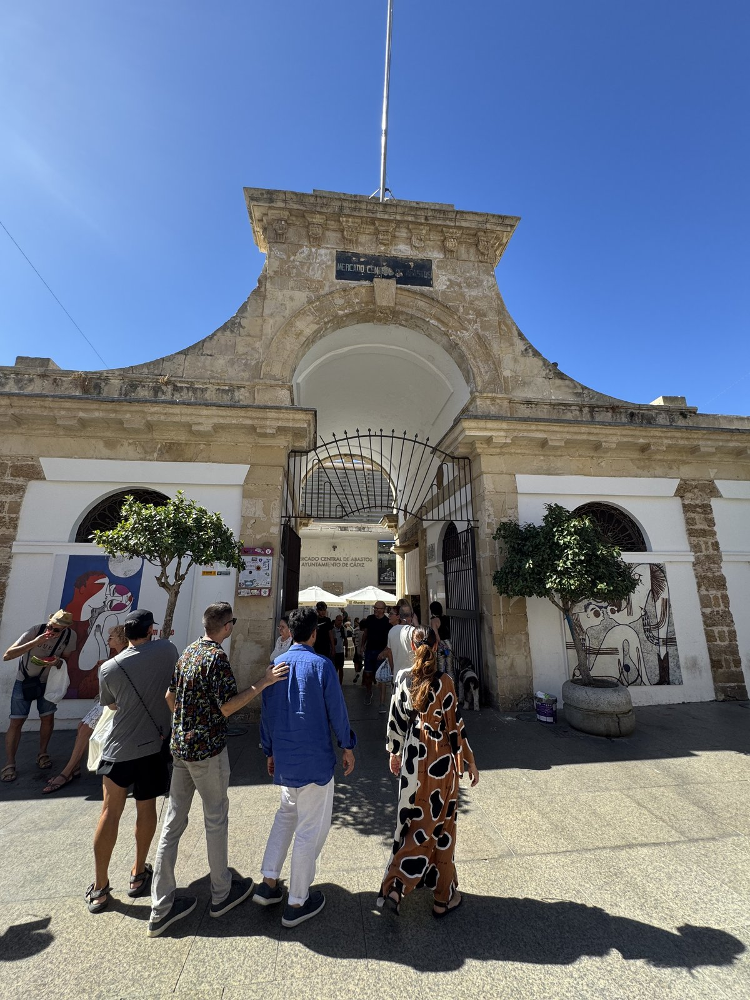
Ich wollte unbedingt frisch geschnittenen Serrano-Schinken kaufen, und gleich am Anfang sahen wir einen gut besuchten Fleischerstand — das ist oft ein Zeichen guter Qualität.
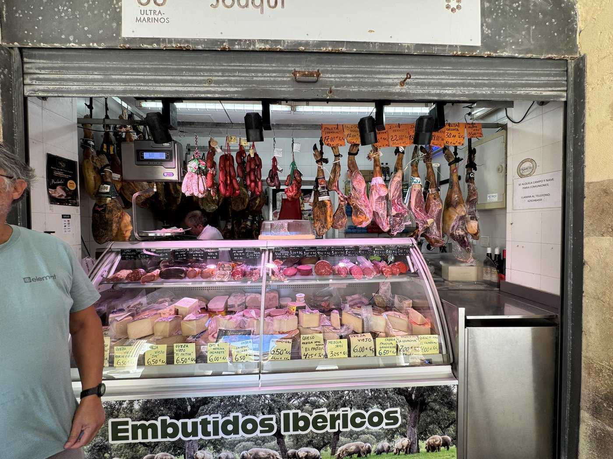
In Spanien bildet man an solchen Ständen keine Schlange, sondern eher einen Pulk. Wer sich anstellen möchte, fragt in der Regel ¿Quién es el último? oder ¿Quién da la vez? — beides heißt „Wer ist der Letzte?". Worauf diese oder dieser Letzte antwortet: Yo. Detrás de este señor beziehungsweise de esta señora. „Ich. Hinter diesem Herrn / dieser Dame." Funktioniert hervorragend.
Ein paar Minuten später waren wir 1,40 Euro ärmer und drei Scheiben Serrano — 50 Gramm — reicher. Leider war ich zu gierig und habe ihn gleich gegessen. Deshalb gibt es davon keine Fotos.
Am Stand 16 konnten wir natürlich auch nicht vorbeigehen: eingelegte Oliven in verschiedenster Zubereitung. Eine Kundin erkannte uns mit fachkundigem Blick sofort als Touristen und blutige Spanien-Anfänger und wies uns freundlich auf die Probierteller hin, was ich gerne annahm. Am Ende hatte ich ein Beutelchen Oliven mit etwas von dem Saft, in dem sie eingelegt waren, und zwei fertige Spießchen mit einer dicken Olive, einem Stück Käse und Schinken.
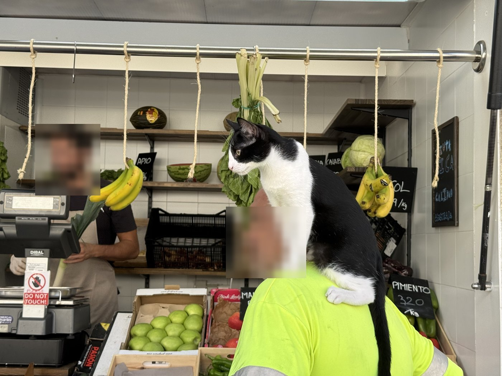
In der Halle selbst standen die Fischverkäufer. Der Geruch ist nicht für jeden erträglich — aber ich habe tapfer eine Muschel probiert. Eine Zamburiña, die bunte Kammuschel. Und wirklich lecker, auch wenn ich anfangs eher sparsam aus der Wäsche geguckt habe.
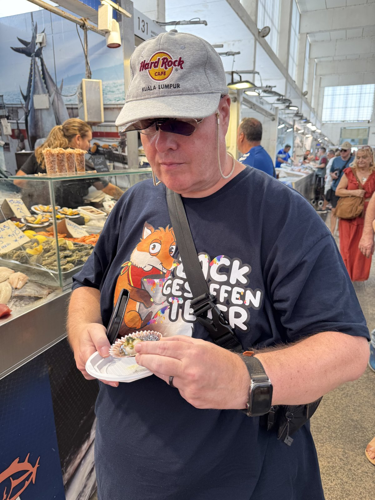
Trotzdem wollten wir langsam etwas Richtiges essen. Und nach den Brochetas vom Vortag wollte ich gerne die maurische Variante probieren, die sich hier kulturell immer noch ein wenig hält: Pinchos Morunos. Dafür gibt es in der Altstadt ein hervorragendes Restaurant, das Puerta del Eden, das mir sehr empfohlen worden war — auch für die hausgemachte Limonade, die sie dort frisch zubereiten.
Wir wurden nicht enttäuscht. Obwohl wir nicht reserviert hatten, was dort wohl sehr sinnvoll ist, bekamen wir eine mesa para dos. Sassi hat sich Shawarma Mixta bestellt, mit Rind und Hühnchen, ich Shish Taouk — die Hähnchenspieße.
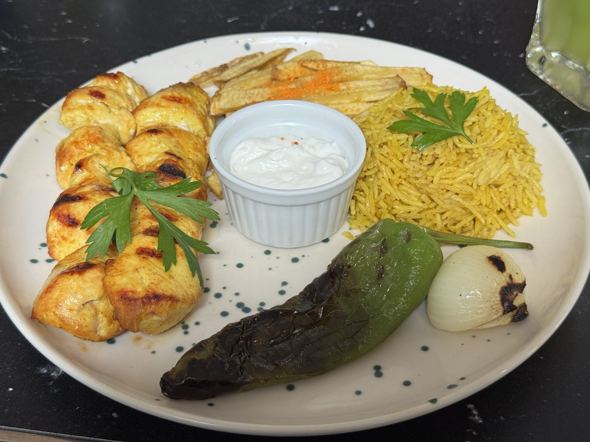
Beide kamen mit einer göttlichen Knoblauchsoße. Wir haben danach die gesamte Altstadt z'ammgestunken — wären wir irgendwo verschüttet worden, hätte man nur der Duftfahne folgen müssen.
Eigentlich wollte ich danach zurück zum roten Bus. Da wir uns von der Haltestelle Kathedrale aber schon ein gutes Stück in Richtung Haltestelle 3 bewegt hatten, gingen wir weiter in diese Richtung. Und da fiel mir ein winziges Gäßchen auf, das am Ende mit einem dicken Gitter abgesperrt war. Ein Pärchen stand davor und blickte hindurch.
Denn genau dort liegt die Ausgrabungsstätte des römischen Theaters von Cádiz, das in der Antike wohl das drittgrößte der damals bekannten Welt gewesen sein soll.
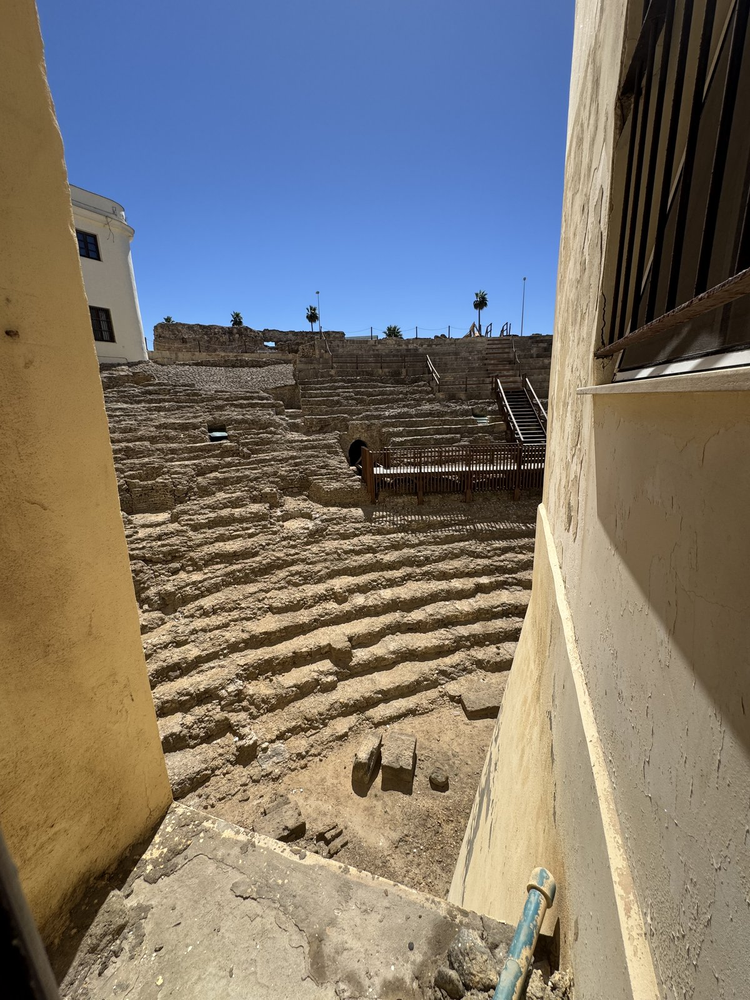
Daß ich mir diese Fotochance nicht habe entgehen lassen, ist wohl klar. Aber hätte dieses Pärchen da nicht gestanden — ich hätte nie damit gerechnet, am Ende dieser völlig unscheinbaren Sackgasse so ein Kleinod zu finden.
Dummerweise sahen wir, als wir die Hauptstraße erreichten, den roten Bus gerade an Haltestelle 3 abfahren. Also ließen wir uns Zeit und knipsten noch ein paar Fotos von der Rückseite der Kathedrale — nur um festzustellen, daß der Bus an Haltestelle 4 sehr lange gehalten hatte. Hätten wir nicht so getrödelt, wir hätten ihn locker erreicht.
Nuja. Pech gehabt. Eigentlich wollte ich ohnehin nur noch zum Castillo de San Sebastián, einer alten Festung auf einer kleinen Felseninsel vor Cádiz, die nur über einen schmalen Damm vom Festland aus zu erreichen ist. Heute ist sie sehr verfallen, aber trotzdem für Besucher geöffnet.
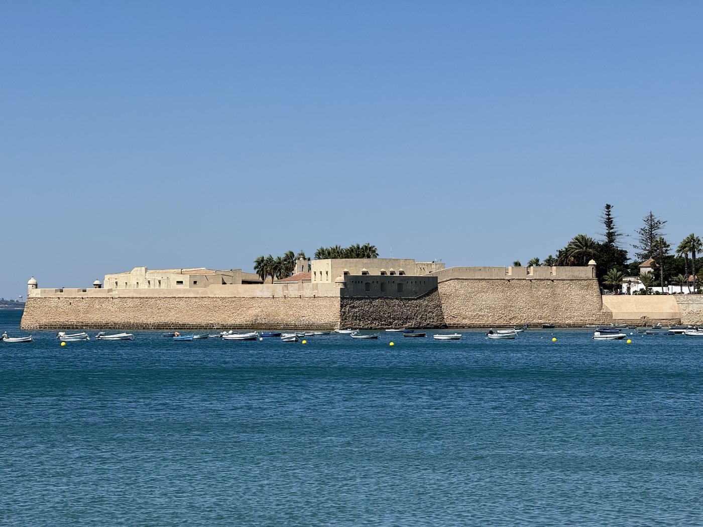
Dank des kräftigen Windes war es trotz knalliger Sonne erträglich, also machten wir uns auf den Fußweg dorthin.
Und an dieser Stelle ein gutgemeinter Rat, falls das mal jemand nachmachen möchte: Nehmt euch Getränke mit. Wir hatten zwar kurz vor der Plaza del Sur noch einen der vielen öffentlichen Wasserspender genutzt — aber der Weg hin und zurück ist lang. Sobald man den Eingangsbereich Richtung Damm verläßt, gibt es nichts mehr. Kein Kiosk, kein Verkaufsstand, kein Estanco, wie die Tabakläden hier heißen. Sassi nennt sie hartnäckig „Tabascoläden", ihres braun-gelben Tabacos-Schildes wegen.
Man ist da rund zweieinviertel Kilometer hin und zurück unterwegs, und bei über 30 °C, heftigem Wind und der Salzwassergischt, die man gelegentlich abbekommt, ist das kein Spaß. Besonders nicht, wenn man vorher reichlich Knobisoße hatte, die ja ohnehin Dorscht macht.
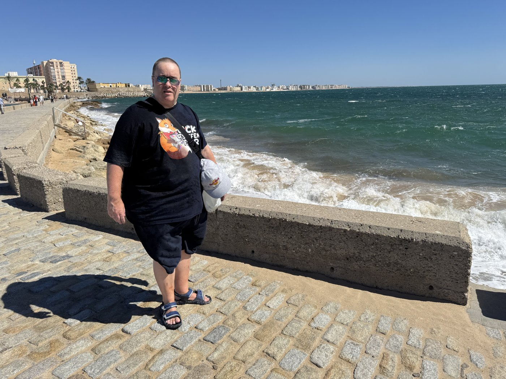
Die kleine Bar im Eingangsbereich der Festung war unsere Rettung, als wir zurückkehrten. Die Getränke, die wir dort bestellt haben, sind in Sekundenschnelle verdampft.
Auf dem Rückweg stellten wir zu unserem Entsetzen fest, daß es schon fast 17 Uhr war — und die roten Busse fahren nur bis 17 Uhr. Was extrem doof war, weil die wirklich direkt vor dem Hoteleingang halten.
Nuja. Von dort hinten fährt ja auch die offizielle Stadtbuslinie 7, und die fährt auch fast direkt am Hotel vorbei. An der Haltestelle stand aber erstmal eine Linie 2. Die fährt nicht unbedingt unsere Richtung, aber da wir uns nicht sicher waren, ob die 7 da hinten überhaupt fährt, entschlossen wir uns, wenigstens ein paar Haltestellen mitzufahren und dann an der Kathedrale umzusteigen. Und uns vom Fahrer bestätigen zu lassen, daß der Plan funktioniert.
„No Englis!" war dummerweise nicht die Antwort, die uns weiterbrachte, und mein Spanisch ist halt doch sehr rudimentär. Immerhin bekam ich heraus: linea siete lista — Linie 7 fertig. Die fährt wohl, zumindest samstags, nur vormittags.
Eine sehr freundliche Mitreisende half uns dann so weit weiter, daß wir als Ausweichplan am Torreón de las Puertas de Tierra, dem alten Stadttor, auf die Linie 1 umsteigen konnten — die bekanntermaßen auch gleich beim Hotel hält. Nur um dort dann doch noch von einem roten Bus überholt zu werden.
Egal. Wir sind am Stadttor umgestiegen, der Einser war nochmal herrlich leer, und so ist aus dem Plan „Bus fahren und kurze Spaziergänge unternehmen" ein rund 5,6 Kilometer langer Marsch geworden.
Und Cádiz hat leider 0:1 verloren und steht jetzt auf Platz 18 der Tabelle. Dafür steht Las Palmas — für den Moment — auf Platz 2. Immerhin hat die Eintracht die Mainzelmännchen besiegt.